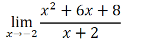
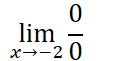
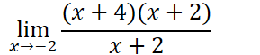
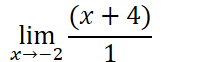
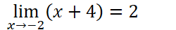
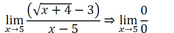
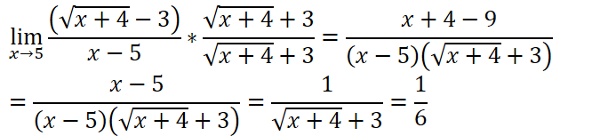

What happens when direct substitution gives us an undefined answer?
Try evaluating both the numerator and the denominator
If they both evaluate to
, this is called the indeterminate form
Removable discontinuities “holes”
Example:


We can then use one or more rules to try to get out of the indeterminate form:
Factoring
Try to factor/cancel out the denominator



Factoring and cancelling is not limited to quadratics
Factor out constants, single variables, etc. to try to cancel the offending term of the denominator
There is no guarantee that factoring an indeterminate form function will give you a limit
Can still lead to division by zero in a non-indeterminate form
Conjugates
You can also try to cancel out the offending term of the denominator using conjugates when a radical is involved
Multiply by the conjugate of the radical over itself (effectively multiplying by 1, which is legal)


Using known limits
Rewrite the limit in a way that the known (given) limit and the limit we are trying to find are distinct
Graphing
Sometimes, it is just the most effective to graph the function
Especially absolute value functions where there is no other mathematical equivalent
Determine the limit visually